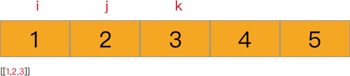

引言
之前在学习golang语言时，一直用其刷leetcode，一方面学习语言，一方面也能练练算法。最近因为工作原因一直没有再刷题，现在这段儿时间不是很忙，想重拾起来，毕竟算法这东西需要经常练，要不很快又回到“只有想法，代码码不出来”的状态。这次选择的语言是python3，原因是我之前用了很久的python，这门语言也算是最擅长的，但是之前一直在用它写业务，很多优秀的内建包用的不多，借此机会熟悉一下。（毕竟我认为刷算法题对熟悉一门语言的内建包有很大的帮助。）话休絮繁，来看题。
题目
题目：组合（https://leetcode.com/problems/combinations/）
描述：给定两个整数 n 和 k，返回 1 … n 中所有可能的 k 个数的组合，示例：输入: n = 4, k = 2 输出:
1 | [[1,2],[1,3],[1,4],[2,3],[2,4],[3,4]] |
代码实现
普通实现
看到题目时，就可以知道这是一个典型的 回溯法 案例。
于是很快给出我的答案：
1 | class Solution: |
这种实现本质上是运用了深度优先的思想。提交后运行时间还算满意，但内存占用量却不理想，毕竟backtrace函数中有列表copy操作。
精简实现
于是查看排名靠前的实现，其大部分使用内建包itertools.combinations，这也是速度最快的方案，我们一会儿讨论。还有一种的实现是
1 | class Solution1: |
实在不要太精简，整理一下格式，甚至只需要一行（虽然可读性差些）。
这个实现的思想是递归。举例来说，假设列表有n个元素，要找到其所有r个元素的组合，那么可以先把第1个元素拿出来，然后只要找到列表中剩余2…n个元素的r-1个元素的组合，再与第一个元素拼接，依此类推，就可以得到全部r个元素的组合了。相比第一种实现，1. 省去了copy列表的性能消耗；2. 不需要创建临时列表，减少了空间消耗。
itertools.combinations实现
上面说到，itertools.combinations的运行速度最快，毕竟内建包，解释器有优化的可能，除了这个因素，是否还有用到什么奇技淫巧来提升运行速度的呢。于是查找官方文档，找到了它代码的大致实现
1 | def combinations(iterable, r): |
看了一会儿才理解了这段代码的奥义。循环之前的代码都很好理解，具体逻辑如下
- 将可迭代对象转为元组pool
- 创建了一个大小为r的列表indices，用来存放一种组合的元素在pool中的索引。
- 生成第一个组合，也就是列表的前r个元素。
接下来重点来看循环体中都做了什么，先看代码中的9-13行，从r-1…0遍历，里面的判断是
1 | indices[i] != i + n - r |
这个公式是什么意思呢？我们可以拿一个具体的例子来看，假设 n = 5，r = 3，当等式成立时
1 | indices[2] == 4 (2 + 5 - 3), |
上面的4、3、2正好是pool的最后三个元素的索引，所以我们就可以得出等式成立的条件：当indices列表中的第i个元素指向的是pool列表中最后r个元素中的第i个时等式成立。
继续往下看，当上面的等式不成立时，indices[i]的值增加1，也就是指向pool中的当前指向元素的下一个元素。
接下来的循环，将indices列表中第i+1…r的元素，依次设置为比前一个元素大1。最后将indices对应在pool中的元素输出。
一图胜千言，假设n = 5， r = 3，indices中的三个索引分别用i，j，k表示，动图如下

itertools.combinations省去了第一、第二种实现中的函数递归调用的堆栈开销，性能又有了一定的提升。
总结
即使一个简单的问题，一种通用的实现，也还藏匿着很多优化手段，往往源码包已经给出了最优解法，所以要经常读一些优秀的源码，来进一步提升自己。